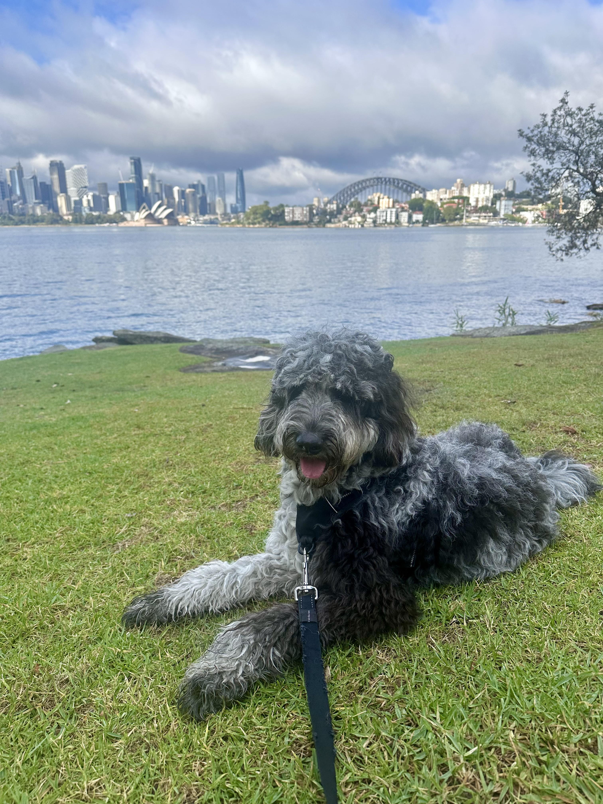

Meet the psychologist
About
About Katy
Katy Faure
Clinical Psychologist
Katy Faure is a clinical psychologist with experience in the assessment and treatment of mental health concerns. Therapy is approached with curiosity, warmth, and care. Katy works collaboratively and at your pace, drawing on evidence-based practice while staying attentive to your individual strengths, experiences, and what a meaningful life looks like for you.
Qualifications & Experience
- Bachelor of Psychology (Hons), Macquarie University
- Master of Clinical Psychology, University of Technology Sydney
- Published research in the diagnosis and classification of mental health disorders, with ongoing interest in contributing to the field
Beyond the clinic
The Person Behind the Practice
Katy is originally from Sydney, though has recently made the move to regional Victoria, and is enjoying the cold and the quiet. Outside of work, she can usually be found playing with her Merle Grey Groodle named Alfie, painting, or walking in nature with an audiobook for company.
